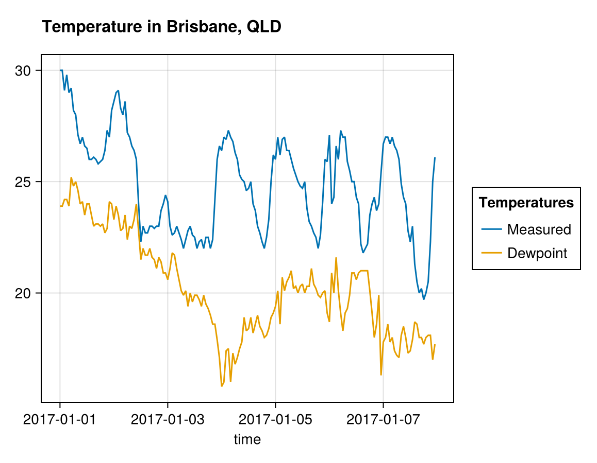

"""
Example: Simple chart
Meteorological data provided by Meteostat (https://dev.meteostat.net)
under the terms of the Creative Commons Attribution-NonCommercial
4.0 International Public License.
The code is licensed under the MIT license.
""""Example: Simple chart\n\nMeteorological data provided by Meteostat (https://dev.meteostat.net)\nunder the terms of the Creative Commons Attribution-NonCommercial\n4.0 International Public License.\n\nThe code is licensed under the MIT license.\n"Import Meteostat library and dependencies
using Meteostat
using Dates
using AlgebraOfGraphics, CairoMakie
using DisplayAs
const MT = Meteostat;
const AOG = AlgebraOfGraphics;Define point
lat, lon = -27.3, 153.0;Fetch all stations
stations = get_stations();[ Info: Reading local file /tmp/.meteostat/cache/stations.csv.gz
Filter stations closest to point
stations = MT.filter_nearby!(stations, lat, lon);Get hourly data for the station
station_id = first(stations.id);
start_date = Date(2017, 1, 1);
end_date = Date(2017, 1, 8);
weather_data = fetch_data(station_id, Dates.Hour, start_date, end_date);
@show first(weather_data, 5)5×12 DataFrame
| Row | time | temp | dwpt | rhum | prcp | snow | wdir | wspd | wpgt | pres | tsun | coco |
|---|---|---|---|---|---|---|---|---|---|---|---|---|
| DateTime | Float64 | Float64 | Float64 | Float64? | Float64? | Float64? | Float64? | Float64? | Float64? | Float64? | Float64? | |
| 1 | 2017-01-01T00:00:00 | 30.0 | 23.9 | 70.0 | missing | missing | 20.0 | 27.7 | missing | 1006.5 | missing | missing |
| 2 | 2017-01-01T01:00:00 | 30.0 | 23.9 | 70.0 | missing | missing | 20.0 | 29.5 | missing | 1005.0 | missing | missing |
| 3 | 2017-01-01T02:00:00 | 29.1 | 24.2 | 75.0 | missing | missing | 30.0 | 33.5 | missing | 1005.9 | missing | missing |
| 4 | 2017-01-01T03:00:00 | 29.8 | 24.2 | 72.0 | missing | missing | 20.0 | 33.5 | missing | 1005.2 | missing | missing |
| 5 | 2017-01-01T04:00:00 | 29.0 | 23.9 | 74.0 | missing | missing | 20.0 | 38.9 | missing | 1004.0 | missing | missing |
draw figure
fig = (
AOG.data(weather_data) *
mapping(
:time,
[:temp, :dwpt];
color=dims(1) => renamer(["Measured", "Dewpoint"]) => "Temperatures",
) *
visual(Lines)
);
img = DisplayAs.PNG(
draw(fig; figure=(; title="Temperature in Brisbane, QLD"), axis=(; width=400))
)
This page was generated using Literate.jl.